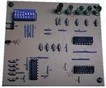
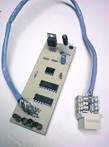

g
Algunos de nuestros kits que te pueden gustar
SUMADOR RESTADOR (ICA-001)

Realiza operaciones aritméticas tanto de suma o de resta, las operaciones son hechas a parir de números binarios de 4 bits. La forma de operar de este kit, es a manera de una calculadora de bolsillo, en la cual se insertan los operandos a través de una serie de interruptores conocidos como dipswitch, y a su vez el resultado de las operaciones se muestra con el encendido o apagado de una serie de led’s. Este kit es un complemento muy útil para aprender a sumar y restar números binarios, que son la base de las operaciones que se realizan en un microprocesador o microcontrolador.
PRECIO PÚBLICO MEX $80.00
PROBADOR DE CONTINUIDAD DE CABLEADOS (ICA-002)
Para las personas que se dedican a mantener, reparar o instalar equipo de control electrónico o de comunicaciones, les resulta de mucha utilidad conocer el estado en que se encuentra el cableado de interconexión de los equipos, máxime cuando se trata de una red ya sea telefónica o de comunicación entre computadoras (intranet), o simplemente cuando se tenga un alambre conductor de cobre que una dos equipos diferentes. Este kit es de mucha utilidad para verificar que tanto el cableado como los conectores se encuentren en perfectas condiciones de operación.Ya que se puede realizar pruebas secuenciales de continuidad y cruces sobre cada hilo conductor, y además puede emplearse también para pruebas similares sobre otros tipos de cables, utilizando los adaptadores correspondientes.
PRECIO PÚBLICO MEX $110.0